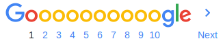

https://www.theodinproject.com/
The Odin Project empowers aspiring web developers to learn together.
-
Web Development 101
1. Installation Overview - HTML and CSS Basics - HTML/CSS
-
Courses
Web Development 101 - Javascript - Ruby Programming - About - ...
-
The Odin Project
The Odin Project empowers aspiring web developers to ...
-
About
The Odin Project is one of those "What I wish I had when I was ...
-
FAQ
The Odin Project empowers aspiring web developers to ...
-
JavaScript course
Library - Final Project - Tic Tac Toe - React - Restaurant Page - Vue
https://www.reddit.com/r/.../comments/.../cant_recommend_the_odin_project_enough...
8 Jan 2019 - The Odin Project makes you set up an actual environment on your computer where you learn how to actually write code. All the learning and ...
https://medium.com/the-odin-project/my-path-to-web-development-part1-415e42036...
Someday, however, I saw a thread on my Reddit feed that talked about learning to code. I clicked on it and discovered The Odin Project. Yes, another website ...
https://twitter.com/theodinproject?lang=en
The latest Tweets from The Odin Project (@TheOdinProject). An open source online curriculum for learning web development. We help our students learn the ...
Videos
Techlahoma
Youtube - 24 Feb 2018
https://www.reddit.com/r/.../comments/.../cant_recommend_the_odin_project_enough...
8 Jan 2019 - 17 posts - 13 authors
Welcome to LearnProgramming! ... This is a subreddit for learning programming, not a "critique my project" or "advertise my project" subreddit. ... Ive tried codeacedemy, freecodecamp and the complete web developer course on Udemy and have grasped html and css quite well.
https://www.youtube.com/channel/UCk0b0VTnJxXbxupXJ4D2yjQ
How do you contribute to open source? In this video, I'll describe a model for understanding how Git contributions work and then show you how you can make ...
Searches related to the odin project
![]()